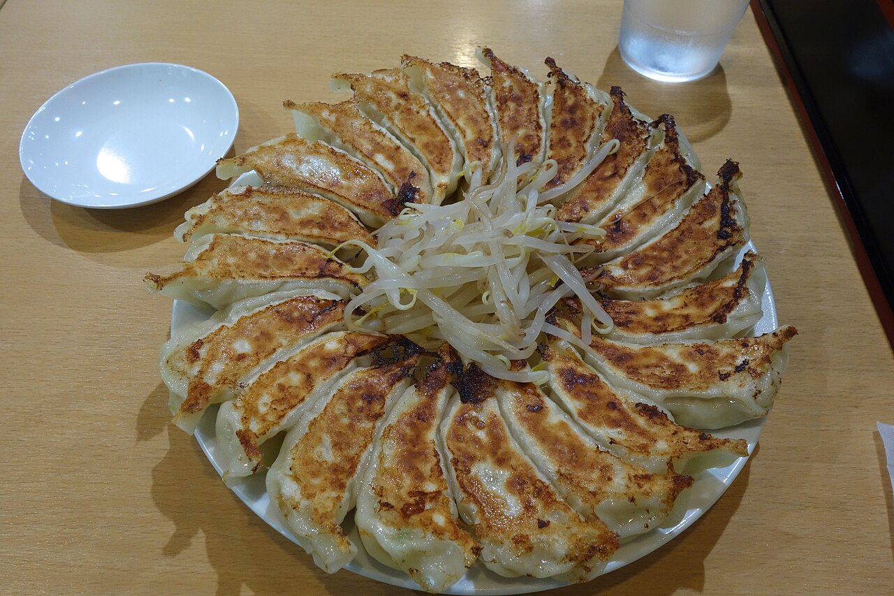
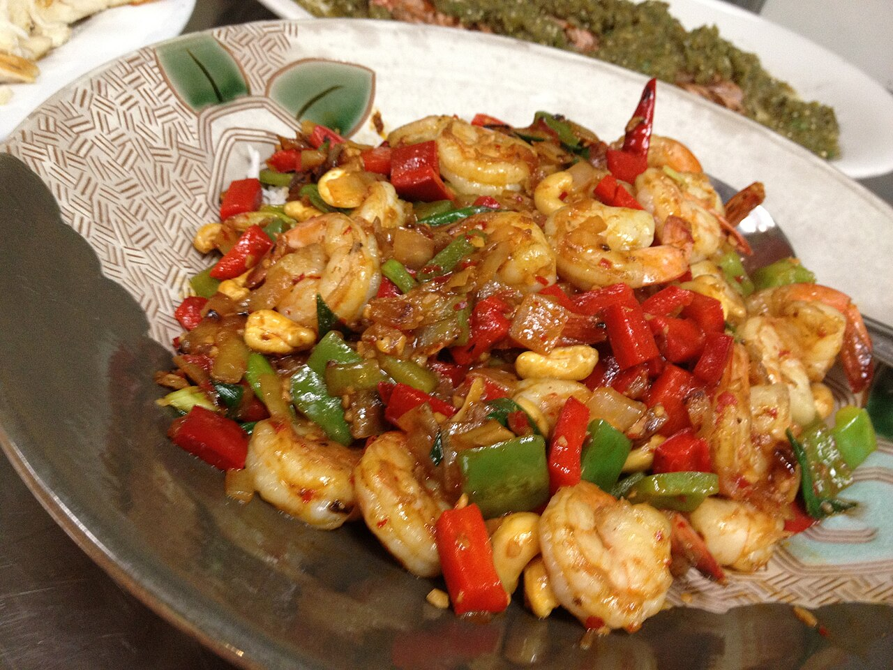

Yak The Kathmandu Kitchen-Daphne
Nepali, Indian, Tibetan, and Bhutanese dishes in Daphne, from a family owned restaurant.

About
Yak The Kathmandu Kitchen is a family owned restaurant serving Nepali, Indian, Tibetan, and Bhutanese dishes at 28600 US Highway 98, Suite D, in Daphne, Alabama. This concept covers the Daphne location only. Dine in, takeout, and catering are offered, with delivery through DoorDash and Uber Eats.
Menu
Dine in, takeout, or catering
Dine in and takeout are offered, with delivery through DoorDash and Uber Eats, plus catering. Call (251) 264-2046 to ask about an order or a catering event.
Gallery


All gallery photos are stock photos, labeled as such. They show the kind of work and setting described on this page, not this business.
Visit
Address: 28600 US-98, Suite D, Daphne, AL 36526
Hours: Sunday, Monday, Tuesday, and Thursday 11:00 AM to 9:00 PM, Friday and Saturday 11:00 AM to 9:30 PM, Wednesday closed.
Phone: (251) 264-2046
Contact
Yak The Kathmandu Kitchen-Daphne serves Daphne, AL. Questions? Call (251) 264-2046.